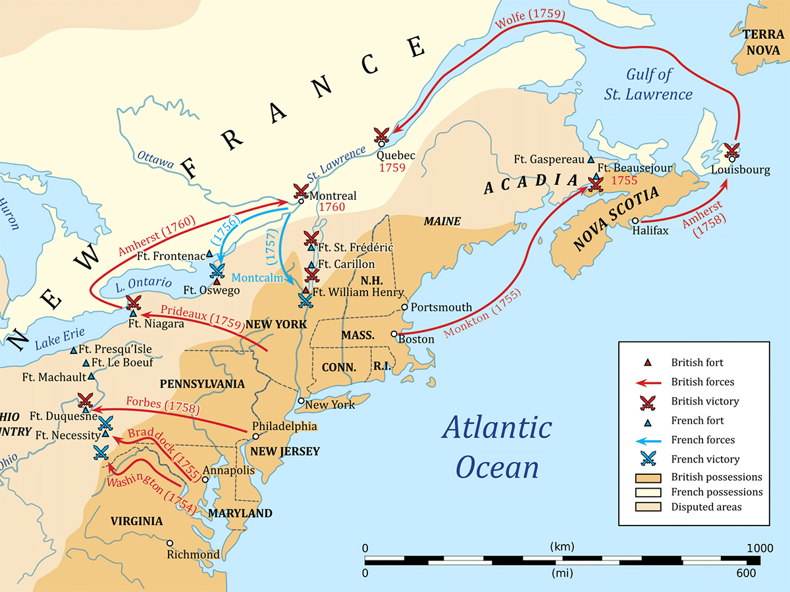

Between 1689 and 1763, there were four major wars that involved France, Britain, and Spain and their respective colonial possessions. During this time the major European powers competed for control of territory in Europe and the Americas. Where a European power took control of territory (outside of Europe), it would set up a colony. The goal of colonies was typically to produce raw materials for the home country and serve as a market for finished products. This set up was known as mercantilism.
The first of these conflicts was King William’s War (1689–1697) or the War of the League of Augsburg in Europe. Others included Queen Anne’s War (1702–1711) or the War of the Spanish Succession, and King George’s War (1744–1748) or the War of the Austrian Succession.
The French and Indian War was the last act in a great series of wars between Britain and France involving the American colonies. The larger global conflict involved all of the major powers of Europe and was known as the Seven Years’ War.
Unlike the prior colonial wars, the primary theater of operations for the French and Indian War was North America, as a result of Britain’s Iroquois allies and the decision of Prime Minister William Pitt. This war represented France’s last-ditch effort to save its New World possessions from the English and its Native American allies, and the war might have had a different outcome if it hadn’t been for the Iroquois Confederacy alliance to the British.

Starting in 1754, a full two years before military operations began in Europe, the French and Indian War proved to be among the most barbaric. The results would reshape the political landscape of North America for good and lead to issues creating a gap between the British colonists in America and the British leadership at home in Europe. Most importantly, this war was economically ruinous for Great Britain.